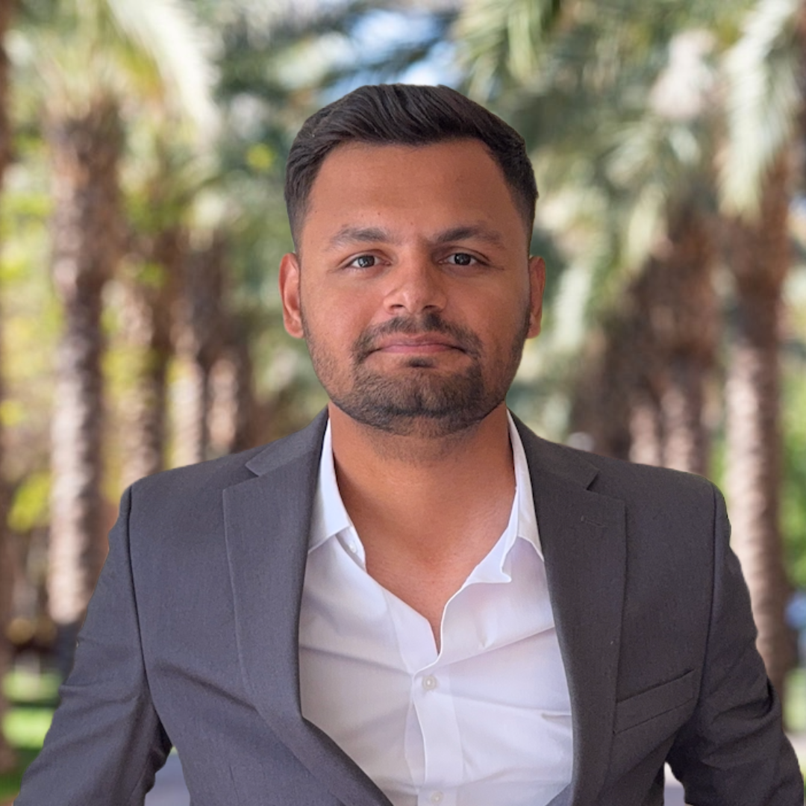

üëãüèª Hi, I am
Deep Pujara
Machine Learning and Solar Researcher
AI Intern at
I'm a Ph.D. student at Arizona State University specializing in solar energy, embedded machine learning, and signal processing. Bridging research with real-world deployment through hardware-software integration, cloud-based ML, and industry collaborations. Passionate about innovation in clean tech and intelligent edge devices.


 Python
Python MATLAB
MATLAB C++
C++ TensorFlow
TensorFlow PyTorch
PyTorch NumPy
NumPy Matplotlib
Matplotlib Pandas
Pandas Scikit-Learn
Scikit-Learn VS Code
VS Code Simulink
Simulink Git
Git LaTeX
LaTeX Jira
Jira Confluence
Confluence MS Office
MS Office Arduino IDE
Arduino IDE